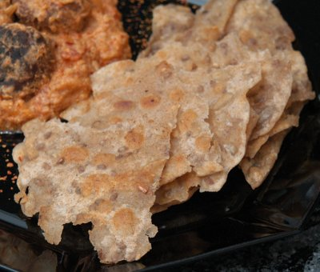

| Zutaten für 4 Personen: | |
| 175 g | Weissmehl |
| 150 g | Vollkornmehl |
| 1/2 KL | Salz |
| 2.5 dl | Wasser |
| 5 dl | Erdnussöl |
Mehl in eine Teigschüssel geben. Salz zugeben und mischen.
Von Hand eine Mulde formen. Wasser in die Mitte giessen. Mit einer Hand von der Mitte aus anrühren und zu einem Teig verarbeiten.
Den Teig gut durchkneten und an einem warmen Ort 15 Minuten ruhen lassen.
Den Teig in 12 gleichgrosse Portionen teilen und zu einer glatten Kugel formen.
Auf einer leicht bemehlten Arbeitsfläche die Teigkugeln zu Fladen von ca. 10 cm Durchmesser ausrollen.
Erdnussöl in einer Bratpfanne oder Bratentopf erhitzen.
Die Fladen von beiden Seiten goldbraun frittier-braten.
Die Puri-Brote auf einem Küchenpapier abtropfen lassen. Zwischen Tüchern warmhalten.
Warm servieren!
Patricia Krummenacher, Indischer Kochkurs, 2006
Ergibt knusprige Fladen, so ein bisschen wie Poppadoms. Sandra vergibt bloss 2 Sterne, bei mit gibt es 3. Ist kaum etwas für die Linie mit all dem Öl! RE 6.6.2011
@LINKBACK_TAG@ @WAKELOCK@